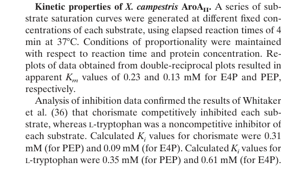

aroH (PP_1866) encodes a class-II (type-II) 3-deoxy-D-arabino-heptulosonate 7-phosphate synthase (DAHP synthase / DAH7PS; EC 2.5.1.54) in Pseudomonas putida KT2440. The enzyme catalyzes the aldol-like condensation of phosphoenolpyruvate (PEP) and D-erythrose 4-phosphate (E4P), with release of phosphate, to form 3-deoxy-D-arabino-heptulosonate 7-phosphate (DAHP). This is the first committed step of the shikimate pathway, which ultimately produces chorismate, the branch-point precursor for the aromatic amino acids (phenylalanine, tyrosine, tryptophan) and many other aromatic metabolites. Class-II DAH7PS enzymes adopt a (beta/alpha)8 TIM-barrel fold and require a divalent metal cation for catalysis; the UniProt record for this protein indicates activity with manganese, cobalt or cadmium ions, with one cation bound per subunit. In bacterial DAHP-synthase nomenclature, AroH is conventionally the tryptophan-sensitive isoenzyme, although the regulatory properties of this specific P. putida protein have not been characterized experimentally. As a soluble central-metabolism enzyme acting on cytosolic substrates, AroH is expected to function in the cytoplasm.
| GO Term | Evidence | Action | Reason |
|---|---|---|---|
|
GO:0003849
3-deoxy-7-phosphoheptulonate synthase activity
|
IEA
GO_REF:0000120 |
ACCEPT |
Summary: Core molecular function. The protein belongs to the class-II DAHP synthase family (RuleBase RU363071; InterPro IPR002480/PF01474; TIGR01358 DAHP_synth_II) and the UniProt catalytic-activity record (Rhea:14717, EC 2.5.1.54) describes condensation of PEP + E4P + H2O to DAHP + phosphate, exactly matching this GO term.
Reason: This term precisely captures the enzymatic activity of a class-II DAHP synthase. The assignment is strongly supported by sequence/family evidence (InterPro, RuleBase, NCBIfam TIGR01358) and conserved PEP- and metal-binding residues annotated in UniProt. This is the gene's core molecular function.
Supporting Evidence:
file:PSEPK/aroH/aroH-deep-research-falcon.md
AroH is a DAH7PS catalyzing PEP + E4P -> DAHP/DAH7P and feeding the shikimate pathway; best-supported assignment is class-II / type-II DAH7PS (TIM-barrel fold, conserved metal-binding site), compatible with the UniProt/InterPro/Pfam context for Q88LR3 (PF01474 / DAHP_synth_2). No direct biochemical characterization of P. putida KT2440 AroH was found, so this is family/sequence-level inference.
|
|
GO:0009073
aromatic amino acid family biosynthetic process
|
IEA
GO_REF:0000002 |
ACCEPT |
Summary: Correct biological process. DAHP synthase catalyzes the first committed step of the shikimate pathway, which feeds chorismate biosynthesis and the downstream aromatic amino acid (Phe/Tyr/Trp) biosynthetic branches.
Reason: This is the canonical pathway role of a DAHP synthase and is consistent with the molecular function annotation. The term is appropriate and represents a core biological process for this gene. (The GOA stub used the label "aromatic amino acid biosynthetic process"; the current GO label for GO:0009073 is "aromatic amino acid family biosynthetic process" and is used here.)
|
The research report should be a detailed narrative explaining the function, biological processes, and localization of the gene product. Citations should be given for all claims.
You should prioritize authoritative reviews and primary scientific literature when conducting research. You can supplement
this with annotations you find in gene/protein databases, but these can be outdated or inaccurate.
We are specifically interested in the primary function of the gene - for enzymes, what reaction is catalyzed, and what is the substrate specificity? For transporters, what is the substrate? For structural proteins or adapters, what is the broader structural role? For signaling molecules, what is the role in the pathway.
We are interested in where in or outside the cell the gene product carries out its function.
We are also interested in the signaling or biochemical pathways in which the gene functions. We are less interested in broad pleiotropic effects, except where these elucidate the precise role.
Include evidence where possible. We are interested in both experimental evidence as well as inference from structure, evolution, or bioinformatic analysis. Precise studies should be prioritized over high-throughput, where available.
The target protein (UniProt Q88LR3; locus PP_1866; gene symbol aroH) is annotated as a class-II (type-II) 3-deoxy-D-arabino-heptulosonate 7-phosphate synthase (DAH7PS; DAHP synthase; EC 2.5.1.54), catalyzing the first committed step into the shikimate pathway by condensing phosphoenolpyruvate (PEP) and erythrose-4-phosphate (E4P) to produce DAHP/DAH7P, a precursor to chorismate and ultimately aromatic amino acids and many aromatic metabolites. Across bacteria, AroH is typically the tryptophan-inhibited DAHP synthase isoenzyme, and P. putida KT2440 shikimate-pathway engineering work reiterates this isoenzyme logic. However, direct biochemical/structural characterization of P. putida KT2440 AroH (Q88LR3) itself was not identified in the retrieved literature, so several mechanistic points must be treated as family-level inference supported by characterized type-II DAH7PS enzymes in other bacteria. (wang2022uncoveringtherole pages 10-12, sterritt2018structuralandfunctional pages 1-2, dias2023fromdegraderto pages 4-6)
DAHP synthase (DAH7PS) catalyzes an aldol-like condensation of PEP + E4P → DAHP (DAH7P), which is widely considered the entry/first committed step of the shikimate pathway toward chorismate and downstream aromatic metabolites. (wang2022uncoveringtherole pages 10-12, gosset2001microbialoriginof pages 1-2, sterritt2018structuralandfunctional pages 1-2)
In many bacteria, multiple DAHP synthase isoenzymes exist, and their regulation partitions flux in response to aromatic amino acids; in this framework, AroH is the tryptophan-sensitive isoenzyme. (wang2022uncoveringtherole pages 10-12, dias2023fromdegraderto pages 4-6)
DAH7PS enzymes are commonly grouped into type I and type II. Characterized type-II enzymes share a (β/α)8 barrel (TIM-barrel) fold, a conserved divalent metal-binding site, and conserved substrate-binding features. (sterritt2018structuralandfunctional pages 1-2)
Sterritt et al. further emphasize that type-II DAH7PS enzymes may use diverse allosteric architectures; some have extra-barrel structural extensions generating distinct allosteric sites for aromatic amino acids, while others lack these elements and thereby display different regulation and oligomeric assembly. (sterritt2018structuralandfunctional pages 1-2)
The gene symbol aroH can denote different functions in different organisms; within bacterial shikimate-pathway nomenclature, it commonly denotes a DAHP synthase isoenzyme (tryptophan-inhibited). In the retrieved P. putida KT2440 engineering literature, the AroF/AroG/AroH triad is explicitly discussed as DAHP synthases inhibited by Tyr/Phe/Trp, respectively—consistent with the UniProt-supplied identity for Q88LR3. (dias2023fromdegraderto pages 4-6, dias2023fromdegraderto pages 2-4)
No retrieved paper explicitly mentions PP_1866 or UniProt Q88LR3 by accession in the text examined. Therefore, P. putida KT2440-specific conclusions are based on (i) the user-provided UniProt identity and (ii) P. putida KT2440 pathway-engineering studies that describe the DAHP-synthase isoenzyme logic that includes AroH. (dias2023fromdegraderto pages 4-6, yu2016metabolicengineeringof pages 1-3)
Across DAHP synthases, the core reaction is the condensation of PEP and E4P to yield DAHP/DAH7P. This reaction is stated directly in Pseudomonas DAHP synthase context (phzC/DAH7PS) and in broader DAH7PS structural analysis. (wang2022uncoveringtherole pages 10-12, sterritt2018structuralandfunctional pages 1-2)
For P. putida KT2440 AroH (Q88LR3), no experimental substrate-range studies were retrieved; thus, the most defensible annotation is that AroH is a canonical DAH7PS using PEP and E4P in central metabolism. (wang2022uncoveringtherole pages 10-12)
A characterized class-II DAH7PS (Xanthomonas campestris AroAII) shows strong metal dependence: activity is abolished by EDTA and can be restored by divalent metals (e.g., Mn2+ partially restoring activity). (gosset2001microbialoriginof pages 5-7, gosset2001microbialoriginof pages 7-8)
This supports the inference that class-II DAH7PS enzymes—including AroH family members—typically require a divalent metal for catalysis, though the specific metal preference for P. putida AroH is not established here. (sterritt2018structuralandfunctional pages 1-2, gosset2001microbialoriginof pages 5-7)
Because P. putida AroH-specific kinetics were not found, the best available quantitative reference in the retrieved corpus is the class-II AroAII enzyme from X. campestris (Gosset et al., 2001). Reported apparent Michaelis constants were Km(PEP) = 0.13 mM and Km(E4P) = 0.23 mM. (gosset2001microbialoriginof pages 5-7, gosset2001microbialoriginof media 69aabd91)
Regulatory inhibitor constants in this class-II example include:
- Chorismate competitive inhibition: Ki = 0.31 mM (competitive vs PEP) and Ki = 0.09 mM (competitive vs E4P). (gosset2001microbialoriginof pages 5-7, gosset2001microbialoriginof pages 7-8)
- L-tryptophan noncompetitive inhibition: Ki = 0.35 mM (vs PEP) and Ki = 0.61 mM (vs E4P). (gosset2001microbialoriginof pages 5-7, gosset2001microbialoriginof pages 7-8)
These values provide an order-of-magnitude view of inhibitor potency in a class-II DAH7PS, but they should not be treated as parameters for P. putida KT2440 AroH without direct measurement. (gosset2001microbialoriginof pages 5-7)
DAH7PS catalyzes the first committed step into the shikimate pathway, which produces chorismate as a branchpoint precursor for aromatic amino acids and many aromatic metabolites. (gosset2001microbialoriginof pages 1-2, sterritt2018structuralandfunctional pages 1-2)
In Pseudomonas systems, DAH7PS entry can also supply specialized aromatic secondary metabolites (e.g., phenazine/pyocyanin routes), reinforcing that DAH7PS enzymes can couple primary and secondary metabolism depending on paralog context and regulation. (sterritt2018structuralandfunctional pages 1-2, wang2022uncoveringtherole pages 1-3)
Multiple sources reiterate the common regulatory logic that AroF, AroG, and AroH are feedback inhibited by tyrosine, phenylalanine, and tryptophan, respectively, situating AroH as the Trp-sensitive control point. (wang2022uncoveringtherole pages 10-12, dias2023fromdegraderto pages 4-6, dias2023fromdegraderto pages 2-4)
Sterritt et al. emphasize that type-II DAH7PS allostery can be implemented through different structural “componentry”; some type-II enzymes have additional structural extensions that create allosteric sites and enable complex feedback regimes, while other type-II enzymes (including a Pseudomonas phenazine-associated enzyme) lack those structural elements and therefore differ in inhibition behavior and oligomerization. This underscores that the existence and mechanism of AroH allostery must be validated experimentally for each organism/enzyme. (sterritt2018structuralandfunctional pages 1-2)
For a canonical shikimate-pathway DAH7PS such as AroH, the most plausible localization is cytosolic, because its substrates (PEP, E4P) are soluble intermediates of central metabolism. This is a functional inference rather than a direct localization measurement for P. putida AroH in the retrieved corpus. (wang2022uncoveringtherole pages 10-12)
Importantly, a class-II DAH7PS example (X. campestris AroAII) was predicted by PSORT to have a transmembrane region and a topology consistent with a membrane-anchored N-terminus and cytosolic catalytic domain, indicating that membrane association is possible in some class-II DAH7PS lineages. (gosset2001microbialoriginof pages 5-7)
Thus, while cytosolic localization is the best default annotation for P. putida AroH, class-II family diversity warrants checking N-terminal features/topology in the specific sequence when possible. (gosset2001microbialoriginof pages 10-11, gosset2001microbialoriginof pages 5-7)
Dias et al. (published 2023-11; International Microbiology) engineered P. putida KT2440 from a gallic-acid degrader to a producer by introducing a heterologous operon (including a feedback-resistant DAHP synthase variant aroG4 (Pro150Leu)) and deleting native catabolic operons (ΔpcaHG and ΔgalTAPR) to prevent degradation of the target product and intermediate. (dias2023fromdegraderto pages 1-2, dias2023fromdegraderto pages 4-6, dias2023fromdegraderto pages 2-4)
The study explicitly re-states DAHP synthase isoenzyme inhibition logic: aromatic amino acids inhibit DAHP synthases, with AroH inhibited by tryptophan. (dias2023fromdegraderto pages 4-6, dias2023fromdegraderto pages 2-4)
No 2023–2024 primary papers directly characterizing P. putida KT2440 AroH (Q88LR3) were retrieved. The closest “authoritative mechanistic framework” in the retrieved set remains the structural and regulatory analysis of type-II DAH7PS enzymes (e.g., Sterritt et al. 2018), which emphasizes diversification of allostery and oligomeric assembly among type-II enzymes. (sterritt2018structuralandfunctional pages 1-2)
Because DAH7PS entry is often rate-controlling and feedback regulated, biotechnological exploitation frequently uses feedback-resistant DAHP synthase variants (often AroG variants) to push carbon into chorismate-derived products in P. putida KT2440. (yu2016metabolicengineeringof pages 1-3, dias2023fromdegraderto pages 4-6)
Yu et al. (published 2016-11; Frontiers in Bioengineering and Biotechnology) engineered P. putida KT2440 for PHBA production from glucose via chorismate by overexpressing E. coli ubiC (chorismate lyase) and a feedback-resistant DAHP synthase variant aroG D146N; they also deleted pobA (to prevent product degradation) and pheA/trpE (to reduce chorismate drain to aromatic amino acids), and deleted hexR to increase E4P/NADPH availability. (yu2016metabolicengineeringof pages 1-3, yu2016metabolicengineeringof pages 5-6)
Reported performance: maximum 1.73 g/L PHBA and 18.1% carbon yield (C-mol/C-mol) in a non-optimized fed-batch process—an example of direct industrially relevant output linked to shikimate-pathway entry control. (yu2016metabolicengineeringof pages 1-3)
Dias et al. reported 346.7 ± 0.004 mg/L gallic acid after 72 h in shaker culture following deletions that blocked degradation plus expression of a synthetic operon (including a feedback-resistant DAHP synthase variant). (dias2023fromdegraderto pages 1-2)
A key expert-level insight from structural enzymology is that type-II DAH7PS enzymes retain a conserved catalytic scaffold (TIM barrel, metal-binding site) while evolving diverse allosteric “modules” and oligomerization strategies. This implies that annotation of AroH as “Trp-inhibited DAH7PS” is reasonable at the pathway level, but the precise molecular mechanism and strength of inhibition can vary substantially by lineage and should not be assumed without measurement. (sterritt2018structuralandfunctional pages 1-2)
Additionally, the class-II AroAII work emphasizes that in some organisms a class-II enzyme can be the sole DAHP synthase supporting primary aromatic amino acid synthesis, and that sequential feedback inhibition by chorismate and tryptophan is possible in class-II enzymes—highlighting why DAH7PS is a frequent metabolic-engineering target. (gosset2001microbialoriginof pages 1-2, gosset2001microbialoriginof pages 5-7)
High confidence (family/pathway level):
- AroH is a DAH7PS catalyzing PEP + E4P → DAHP/DAH7P and feeding the shikimate pathway. (wang2022uncoveringtherole pages 10-12, sterritt2018structuralandfunctional pages 1-2)
- AroH is commonly described as the Trp-inhibited DAHP synthase isoenzyme in bacterial nomenclature, reiterated in P. putida KT2440 context. (dias2023fromdegraderto pages 4-6, dias2023fromdegraderto pages 2-4)
Moderate confidence (structural/mechanistic inference):
- Type-II DAH7PS enzymes generally use a TIM-barrel fold and a conserved metal-binding site, but exact allostery differs among subtypes. (sterritt2018structuralandfunctional pages 1-2)
Low confidence / not established for KT2440 AroH in retrieved data:
- AroH-specific Km, kcat, Ki, metal preference, oligomeric state, and inhibition mechanism in P. putida KT2440.
- Experimental subcellular localization of Q88LR3.
| Annotation aspect | Evidence summary for aroH / PP_1866 / UniProt Q88LR3 in Pseudomonas putida KT2440 | Notes / citations |
|---|---|---|
| Gene/protein identity | Q88LR3 is annotated as phospho-2-dehydro-3-deoxyheptonate aldolase (EC 2.5.1.54), i.e. a DAHP synthase / DAH7PS family enzyme; ordered locus PP_1866 and gene name aroH match the requested target. Literature on P. putida KT2440 is limited, so much mechanistic detail is inferred from class-II DAHP synthase literature and DAHP-synthase isoenzyme conventions. | Functional inference is consistent with DAHP synthase annotations and class-II family discussion; direct P. putida biochemical characterization was not found in retrieved evidence. (wang2022uncoveringtherole pages 10-12, sterritt2018structuralandfunctional pages 1-2) |
| Enzyme family / structural class | Best-supported assignment is class-II / type-II DAH7PS. Characterized type-II DAH7PS enzymes share a (β/α)8 TIM-barrel fold, conserved metal-binding site, and conserved PEP/E4P-binding residues. This is compatible with the UniProt/InterPro/Pfam context for Q88LR3 (PF01474 / DAHP_synth_2). | Type-II DAH7PS structural features were described directly for characterized enzymes; application to Q88LR3 is by family inference. (sterritt2018structuralandfunctional pages 1-2, wang2022uncoveringtherole pages 15-16) |
| Catalytic reaction / substrate specificity | DAHP synthases catalyze the condensation of phosphoenolpyruvate (PEP) and erythrose-4-phosphate (E4P) to form DAHP/DAH7P, the first committed step of the shikimate pathway leading to chorismate and aromatic amino acids. No alternative substrate specificity for P. putida AroH was found. | This reaction is directly stated for DAHP synthases and class-II examples. (gosset2001microbialoriginof pages 1-2, wang2022uncoveringtherole pages 10-12, sterritt2018structuralandfunctional pages 1-2) |
| Pathway role in P. putida | AroH is inferred to function in entry into the shikimate pathway, supplying flux toward chorismate and downstream biosynthesis of Trp, Phe, Tyr and other chorismate-derived metabolites. In engineering literature, increasing DAHP synthase flux is treated as a major leverage point for aromatic production in P. putida. | Rate control at DAHP synthase is emphasized in shikimate-pathway engineering studies. (wang2022uncoveringtherole pages 1-3, yu2016metabolicengineeringof pages 1-3, yu2016metabolicengineeringof pages 3-4) |
| Feedback regulation | General DAHP-synthase isoenzyme convention assigns AroH as the Trp-sensitive isoenzyme; the 2023 P. putida engineering study explicitly reiterates that AroF, AroG, and AroH are inhibited by Tyr, Phe, and Trp, respectively. For a class-II comparator, Xanthomonas campestris AroAII shows Trp noncompetitive inhibition and chorismate competitive inhibition. | P. putida KT2440-specific inhibition constants for AroH were not found. Comparator class-II kinetics: Km PEP 0.13 mM; Km E4P 0.23 mM; Ki chorismate 0.31 mM vs PEP and 0.09 mM vs E4P; Ki Trp 0.35 mM vs PEP and 0.61 mM vs E4P. (dias2023fromdegraderto pages 4-6, dias2023fromdegraderto pages 2-4, gosset2001microbialoriginof pages 5-7, gosset2001microbialoriginof media 69aabd91) |
| Localization inference | The most likely localization for P. putida AroH is cytosolic, because canonical DAHP synthases act on soluble central-metabolism substrates (PEP, E4P) in the shikimate pathway. However, class-II exceptions exist: some bacterial AroAII enzymes, such as the X. campestris example, have a predicted N-terminal membrane/periplasm-associated segment; smaller AroAII proteins lacking that region are inferred to be soluble. | Thus, membrane association is a known class-II exception, but no evidence was found that PP_1866/Q88LR3 has such an extension; soluble/cytosolic annotation remains the best inference. (gosset2001microbialoriginof pages 1-2, gosset2001microbialoriginof pages 10-11, gosset2001microbialoriginof pages 5-7) |
| Real-world implementation in P. putida (2016) | In P. putida KT2440, boosting shikimate-pathway entry with a feedback-resistant DAHP synthase aroG D146N plus ubiC, combined with deletion of pobA, pheA, trpE, hexR, enabled para-hydroxybenzoic acid (PHBA) production. | Reported best performance: 1.73 g/L PHBA and 18.1% C-mol/C-mol in non-optimized fed-batch. This shows the practical importance of relieving DAHP synthase control, even though the engineered enzyme was AroG rather than native AroH. (yu2016metabolicengineeringof pages 1-3, yu2016metabolicengineeringof pages 5-6, yu2016metabolicengineeringof pages 3-4) |
| Real-world implementation in P. putida (2023) | A 2023 KT2440 gallic-acid study used a heterologous feedback-resistant aroG4 (Pro150Leu) with downstream pathway genes and deletion of pcaHG and galTAPR to redirect shikimate-derived flux. The study again states AroH is the Trp-inhibited DAHP synthase isoenzyme. | Final reported production: 346.7 ± 0.004 mg/L gallic acid after 72 h in shaker culture. This further supports DAHP-synthase deregulation as a real-world strategy in P. putida aromatic bioproduction. (dias2023fromdegraderto pages 4-6, dias2023fromdegraderto pages 2-4, dias2023fromdegraderto pages 1-2) |
Table: This table summarizes the strongest available evidence for functional annotation of Pseudomonas putida KT2440 aroH (Q88LR3/PP_1866), combining direct P. putida pathway-engineering evidence with mechanistic data from characterized class-II DAHP synthases. It is useful for separating target-specific facts from family-level inference where direct biochemical characterization is limited.
References
(wang2022uncoveringtherole pages 10-12): Songwei Wang, Dongliang Liu, Muhammad Bilal, Wei Wang, and Xuehong Zhang. Uncovering the role of phzc as dahp synthase in shikimate pathway of pseudomonas chlororaphis ht66. Biology, 11:86, Jan 2022. URL: https://doi.org/10.3390/biology11010086, doi:10.3390/biology11010086. This article has 12 citations.
(sterritt2018structuralandfunctional pages 1-2): O. W. Sterritt, Eric J. M. Lang, Sarah A Kessans, T. Ryan, B. Demeler, G. Jameson, and E. Parker. Structural and functional characterisation of the entry point to pyocyanin biosynthesis in pseudomonas aeruginosa defines a new 3-deoxy-d-arabino-heptulosonate 7-phosphate synthase subclass. Bioscience Reports, Sep 2018. URL: https://doi.org/10.1042/bsr20181605, doi:10.1042/bsr20181605. This article has 23 citations and is from a peer-reviewed journal.
(dias2023fromdegraderto pages 4-6): Felipe M. S. Dias, Raoní K. Pantoja, José Gregório C. Gomez, and Luiziana F. Silva. From degrader to producer: reversing the gallic acid metabolism of pseudomonas putida kt2440. International Microbiology, 26:243-255, Nov 2023. URL: https://doi.org/10.1007/s10123-022-00282-5, doi:10.1007/s10123-022-00282-5. This article has 7 citations and is from a peer-reviewed journal.
(gosset2001microbialoriginof pages 1-2): Guillermo Gosset, Carol A. Bonner, and Roy A. Jensen. Microbial origin of plant-type 2-keto-3-deoxy-d-arabino-heptulosonate 7-phosphate synthases, exemplified by the chorismate- and tryptophan-regulated enzyme from xanthomonas campestris. Journal of Bacteriology, 183:4061-4070, Jul 2001. URL: https://doi.org/10.1128/jb.183.13.4061-4070.2001, doi:10.1128/jb.183.13.4061-4070.2001. This article has 84 citations and is from a peer-reviewed journal.
(dias2023fromdegraderto pages 2-4): Felipe M. S. Dias, Raoní K. Pantoja, José Gregório C. Gomez, and Luiziana F. Silva. From degrader to producer: reversing the gallic acid metabolism of pseudomonas putida kt2440. International Microbiology, 26:243-255, Nov 2023. URL: https://doi.org/10.1007/s10123-022-00282-5, doi:10.1007/s10123-022-00282-5. This article has 7 citations and is from a peer-reviewed journal.
(yu2016metabolicengineeringof pages 1-3): Shiqin Yu, Manuel R. Plan, Gal Winter, and Jens O. Krömer. Metabolic engineering of pseudomonas putida kt2440 for the production of para-hydroxy benzoic acid. Frontiers in Bioengineering and Biotechnology, Nov 2016. URL: https://doi.org/10.3389/fbioe.2016.00090, doi:10.3389/fbioe.2016.00090. This article has 76 citations.
(gosset2001microbialoriginof pages 5-7): Guillermo Gosset, Carol A. Bonner, and Roy A. Jensen. Microbial origin of plant-type 2-keto-3-deoxy-d-arabino-heptulosonate 7-phosphate synthases, exemplified by the chorismate- and tryptophan-regulated enzyme from xanthomonas campestris. Journal of Bacteriology, 183:4061-4070, Jul 2001. URL: https://doi.org/10.1128/jb.183.13.4061-4070.2001, doi:10.1128/jb.183.13.4061-4070.2001. This article has 84 citations and is from a peer-reviewed journal.
(gosset2001microbialoriginof pages 7-8): Guillermo Gosset, Carol A. Bonner, and Roy A. Jensen. Microbial origin of plant-type 2-keto-3-deoxy-d-arabino-heptulosonate 7-phosphate synthases, exemplified by the chorismate- and tryptophan-regulated enzyme from xanthomonas campestris. Journal of Bacteriology, 183:4061-4070, Jul 2001. URL: https://doi.org/10.1128/jb.183.13.4061-4070.2001, doi:10.1128/jb.183.13.4061-4070.2001. This article has 84 citations and is from a peer-reviewed journal.
(gosset2001microbialoriginof media 69aabd91): Guillermo Gosset, Carol A. Bonner, and Roy A. Jensen. Microbial origin of plant-type 2-keto-3-deoxy-d-arabino-heptulosonate 7-phosphate synthases, exemplified by the chorismate- and tryptophan-regulated enzyme from xanthomonas campestris. Journal of Bacteriology, 183:4061-4070, Jul 2001. URL: https://doi.org/10.1128/jb.183.13.4061-4070.2001, doi:10.1128/jb.183.13.4061-4070.2001. This article has 84 citations and is from a peer-reviewed journal.
(wang2022uncoveringtherole pages 1-3): Songwei Wang, Dongliang Liu, Muhammad Bilal, Wei Wang, and Xuehong Zhang. Uncovering the role of phzc as dahp synthase in shikimate pathway of pseudomonas chlororaphis ht66. Biology, 11:86, Jan 2022. URL: https://doi.org/10.3390/biology11010086, doi:10.3390/biology11010086. This article has 12 citations.
(gosset2001microbialoriginof pages 10-11): Guillermo Gosset, Carol A. Bonner, and Roy A. Jensen. Microbial origin of plant-type 2-keto-3-deoxy-d-arabino-heptulosonate 7-phosphate synthases, exemplified by the chorismate- and tryptophan-regulated enzyme from xanthomonas campestris. Journal of Bacteriology, 183:4061-4070, Jul 2001. URL: https://doi.org/10.1128/jb.183.13.4061-4070.2001, doi:10.1128/jb.183.13.4061-4070.2001. This article has 84 citations and is from a peer-reviewed journal.
(dias2023fromdegraderto pages 1-2): Felipe M. S. Dias, Raoní K. Pantoja, José Gregório C. Gomez, and Luiziana F. Silva. From degrader to producer: reversing the gallic acid metabolism of pseudomonas putida kt2440. International Microbiology, 26:243-255, Nov 2023. URL: https://doi.org/10.1007/s10123-022-00282-5, doi:10.1007/s10123-022-00282-5. This article has 7 citations and is from a peer-reviewed journal.
(yu2016metabolicengineeringof pages 5-6): Shiqin Yu, Manuel R. Plan, Gal Winter, and Jens O. Krömer. Metabolic engineering of pseudomonas putida kt2440 for the production of para-hydroxy benzoic acid. Frontiers in Bioengineering and Biotechnology, Nov 2016. URL: https://doi.org/10.3389/fbioe.2016.00090, doi:10.3389/fbioe.2016.00090. This article has 76 citations.
(wang2022uncoveringtherole pages 15-16): Songwei Wang, Dongliang Liu, Muhammad Bilal, Wei Wang, and Xuehong Zhang. Uncovering the role of phzc as dahp synthase in shikimate pathway of pseudomonas chlororaphis ht66. Biology, 11:86, Jan 2022. URL: https://doi.org/10.3390/biology11010086, doi:10.3390/biology11010086. This article has 12 citations.
(yu2016metabolicengineeringof pages 3-4): Shiqin Yu, Manuel R. Plan, Gal Winter, and Jens O. Krömer. Metabolic engineering of pseudomonas putida kt2440 for the production of para-hydroxy benzoic acid. Frontiers in Bioengineering and Biotechnology, Nov 2016. URL: https://doi.org/10.3389/fbioe.2016.00090, doi:10.3389/fbioe.2016.00090. This article has 76 citations.

id: Q88LR3
gene_symbol: aroH
product_type: PROTEIN
status: DRAFT
taxon:
id: NCBITaxon:160488
label: Pseudomonas putida (strain ATCC 47054 / DSM 6125 / CFBP 8728 / NCIMB 11950 / KT2440)
description: aroH (PP_1866) encodes a class-II (type-II) 3-deoxy-D-arabino-heptulosonate 7-phosphate synthase (DAHP synthase / DAH7PS; EC 2.5.1.54) in Pseudomonas putida KT2440. The enzyme catalyzes the aldol-like condensation of phosphoenolpyruvate (PEP) and D-erythrose 4-phosphate (E4P), with release of phosphate, to form 3-deoxy-D-arabino-heptulosonate 7-phosphate (DAHP). This is the first committed step of the shikimate pathway, which ultimately produces chorismate, the branch-point precursor for the aromatic amino acids (phenylalanine, tyrosine, tryptophan) and many other aromatic metabolites. Class-II DAH7PS enzymes adopt a (beta/alpha)8 TIM-barrel fold and require a divalent metal cation for catalysis; the UniProt record for this protein indicates activity with manganese, cobalt or cadmium ions, with one cation bound per subunit. In bacterial DAHP-synthase nomenclature, AroH is conventionally the tryptophan-sensitive isoenzyme, although the regulatory properties of this specific P. putida protein have not been characterized experimentally. As a soluble central-metabolism enzyme acting on cytosolic substrates, AroH is expected to function in the cytoplasm.
existing_annotations:
- term:
id: GO:0003849
label: 3-deoxy-7-phosphoheptulonate synthase activity
evidence_type: IEA
original_reference_id: GO_REF:0000120
qualifier: enables
review:
summary: Core molecular function. The protein belongs to the class-II DAHP synthase family (RuleBase RU363071; InterPro IPR002480/PF01474; TIGR01358 DAHP_synth_II) and the UniProt catalytic-activity record (Rhea:14717, EC 2.5.1.54) describes condensation of PEP + E4P + H2O to DAHP + phosphate, exactly matching this GO term.
action: ACCEPT
reason: This term precisely captures the enzymatic activity of a class-II DAHP synthase. The assignment is strongly supported by sequence/family evidence (InterPro, RuleBase, NCBIfam TIGR01358) and conserved PEP- and metal-binding residues annotated in UniProt. This is the gene's core molecular function.
supported_by:
- reference_id: file:PSEPK/aroH/aroH-deep-research-falcon.md
supporting_text: AroH is a DAH7PS catalyzing PEP + E4P -> DAHP/DAH7P and feeding the shikimate pathway; best-supported assignment is class-II / type-II DAH7PS (TIM-barrel fold, conserved metal-binding site), compatible with the UniProt/InterPro/Pfam context for Q88LR3 (PF01474 / DAHP_synth_2). No direct biochemical characterization of P. putida KT2440 AroH was found, so this is family/sequence-level inference.
- term:
id: GO:0009073
label: aromatic amino acid family biosynthetic process
evidence_type: IEA
original_reference_id: GO_REF:0000002
qualifier: involved_in
review:
summary: Correct biological process. DAHP synthase catalyzes the first committed step of the shikimate pathway, which feeds chorismate biosynthesis and the downstream aromatic amino acid (Phe/Tyr/Trp) biosynthetic branches.
action: ACCEPT
reason: This is the canonical pathway role of a DAHP synthase and is consistent with the molecular function annotation. The term is appropriate and represents a core biological process for this gene. (The GOA stub used the label "aromatic amino acid biosynthetic process"; the current GO label for GO:0009073 is "aromatic amino acid family biosynthetic process" and is used here.)
core_functions:
- description: Catalyzes the first committed step of the shikimate pathway, the condensation of phosphoenolpyruvate and D-erythrose 4-phosphate to form 3-deoxy-D-arabino-heptulosonate 7-phosphate (DAHP), as a class-II DAHP synthase.
supported_by:
- reference_id: GO_REF:0000120
supporting_text: 3-deoxy-7-phosphoheptulonate synthase activity (GO:0003849); EC 2.5.1.54; Rhea:14717 PEP + E4P + H2O = DAHP + phosphate.
molecular_function:
id: GO:0003849
label: 3-deoxy-7-phosphoheptulonate synthase activity
directly_involved_in:
- id: GO:0009423
label: chorismate biosynthetic process
references:
- id: GO_REF:0000002
title: Gene Ontology annotation through association of InterPro records with GO terms
findings: []
- id: GO_REF:0000120
title: Combined Automated Annotation using Multiple IEA Methods
findings: []
- id: PMID:11395471
title: 'Microbial origin of plant-type 2-keto-3-deoxy-D-arabino-heptulosonate 7-phosphate synthases, exemplified by the chorismate- and tryptophan-regulated enzyme from Xanthomonas campestris'
findings:
- statement: Biochemical characterization of a class-II (plant-type / AroAII) DAHP synthase shows divalent-metal dependence (activity abolished by EDTA) and feedback inhibition by chorismate and tryptophan, providing the family-level basis for annotating P. putida AroH as a class-II DAHP synthase.
supporting_text: Microbial origin of plant-type 2-keto-3-deoxy-D-arabino-heptulosonate 7-phosphate synthases from Xanthomonas campestris; Km(PEP) and Km(E4P) reported; chorismate and L-tryptophan inhibition characterized.
reference_review:
relevance: MEDIUM
correctness: VERIFIED
review_notes: 'Citation-integrity fix: the original identifier PMID:11442790 was a wrong identifier (resolves to an unrelated veterinary pharmacokinetics article, "Pharmacokinetics of intravenous imipramine hydrochloride in cattle"). Replaced with PMID:11395471, the correct Gosset, Bonner & Jensen, J Bacteriol 2001;183:4061-4070 paper (DOI 10.1128/jb.183.13.4061-4070.2001), recovered via DOI lookup and PubMed-verified to match the title and supporting text (Xanthomonas campestris AroA(II) class-II DAHP synthase, chorismate/tryptophan feedback inhibition). Characterizes a class-II DAHP synthase in a different organism; relevant as family-level mechanistic support, not direct evidence for P. putida AroH.'
{kind=link}